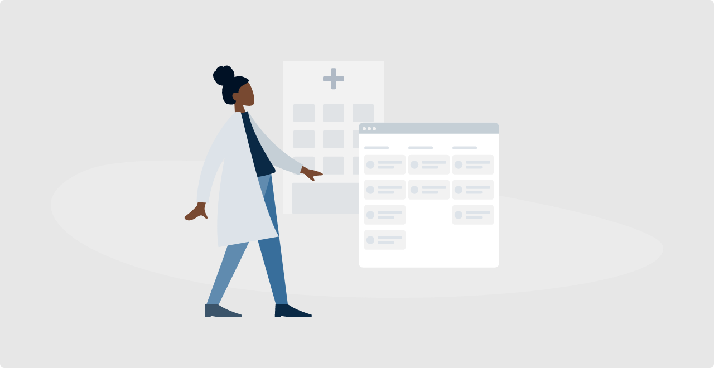
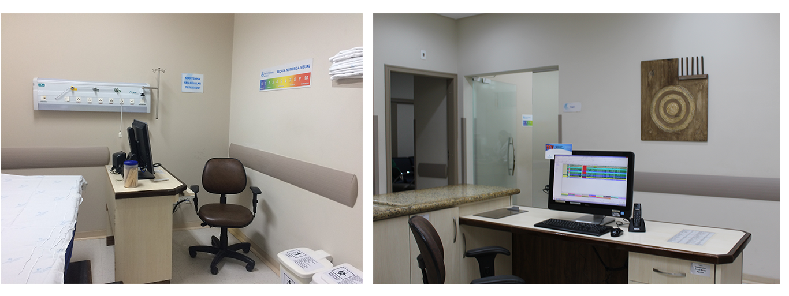
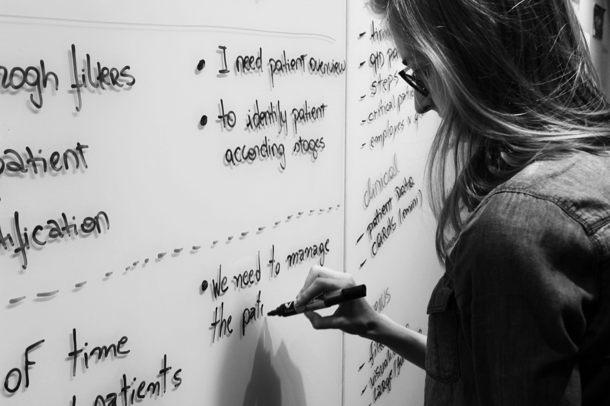
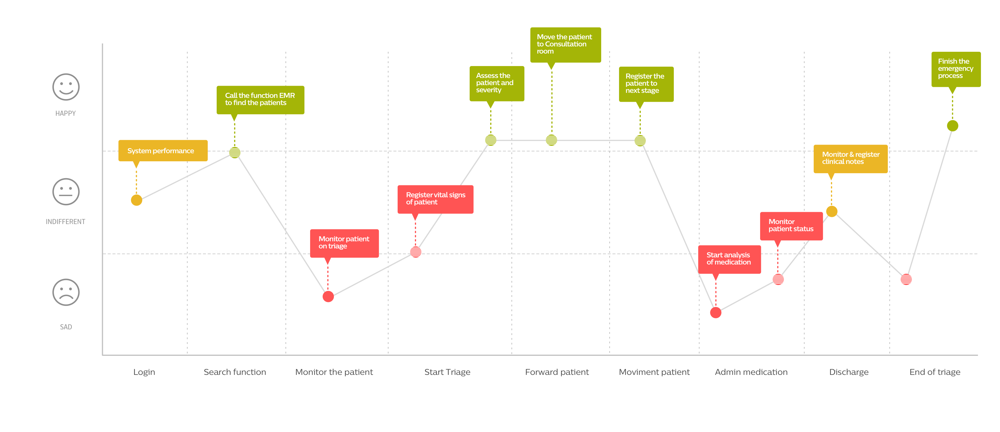
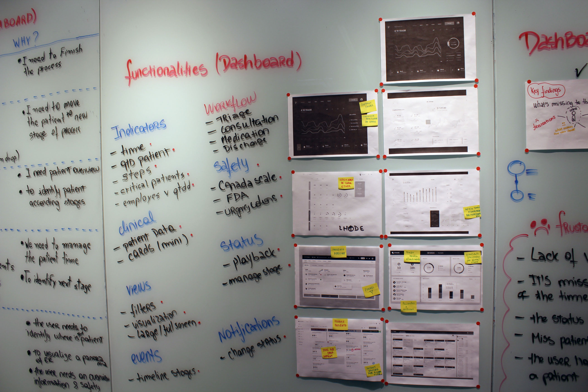
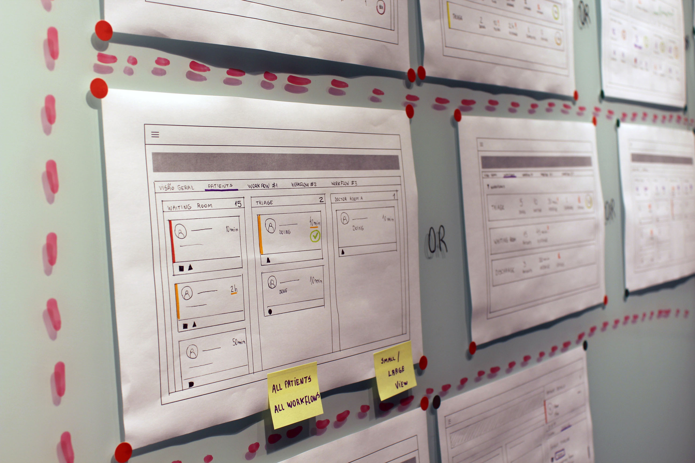
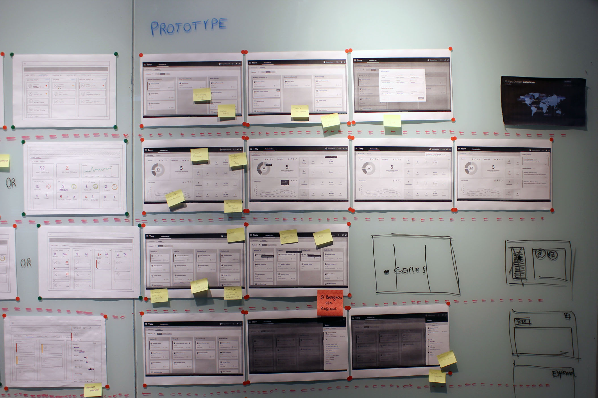
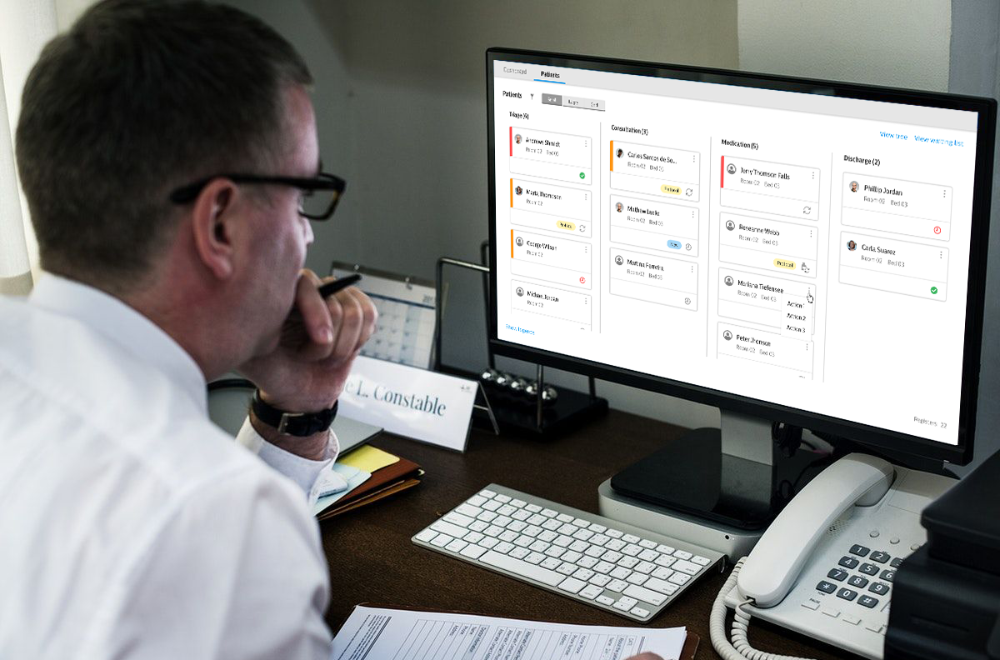

Hospital Emergency Room
Healthcare project delivered at Philips.
Some details have been omitted to comply with a non-disclosure agreement.

The Challenge
Emergency rooms are one of the highest-pressure environments in healthcare. Clinical staff need to track dozens of patients simultaneously, make fast decisions, and coordinate across roles — all while the situation evolves in real time. When the product was migrated from a legacy system to a modern web platform, something broke: nurses, technicians, and physicians lost visibility into patient status, and their ability to manage the workflow efficiently suffered as a result.
The challenge was clear: redesign the patient status experience so that clinical staff could do their jobs with less friction, less cognitive load, and more confidence.
My Role
- Conducted user research to understand the clinical context and identify design opportunities
- Facilitated workshops to generate ideas and align stakeholders across departments
- Produced low- and high-fidelity prototypes to communicate and test design decisions
- Presented design solutions to senior stakeholders and incorporated their feedback
- Coordinated communication between design, development, and business teams
- Supported the development team throughout implementation to ensure design quality
To truly understand the problem, we went to the source: the emergency room itself. Through field research, we observed nurses, technicians, physicians, and patients in their natural environment — watching how work actually happened, not how it was assumed to happen.
We analysed the most critical user tasks in the emergency room workflow using cognitive walkthroughs, identifying where the interface created unnecessary mental effort and where workarounds had quietly become part of people's daily routine.

Back from the field, we synthesised our findings to surface the patterns that mattered. We mapped the pain points, workarounds, and unmet needs of every role involved in the emergency room process: receptionists, nurses, technicians, pharmacists, and physicians.

Four critical themes emerged from the research:
Emergency room management: The charge nurse is the linchpin of the entire process — she needs a complete, real-time picture of every patient in the department.
Legacy dependency: Staff had built deep muscle memory around the old system. Any new solution needed to earn trust by being clearly better, not just different.
Status overload: The existing interface used 25 different colour codes to represent patient status. Rather than helping, this created visual noise that slowed decision-making and increased errors.
Workflow fragmentation: We identified five distinct workflows, each requiring specific tasks — but the system treated all users identically, ignoring how differently each role worked.

With the insights mapped, we ran structured ideation sessions to explore solutions for each workflow moment. The goal was to simplify without losing clinical depth.
Find patient: Visual identification using icons and colour, combined with smart filters to surface the right patient quickly.
Time management: At-a-glance risk indicators, classification labels, and timely notifications to flag patients who needed attention.
Patient monitoring: A clear stage-and-step model showing exactly where each patient was in their care journey.
Process control: Role-specific workflows, so each user only sees what's relevant to them — reducing noise and improving focus.
Status management: A drag-and-drop Kanban approach for moving patients between states, with critical statuses surfaced prominently.

We moved quickly from sketches to low-fidelity wireframes, using them to stress-test ideas early and cheaply. Once the core interactions were validated, we progressed to high-fidelity prototypes to communicate the full visual and interactive experience to stakeholders and end users.

Validation wasn't a single event — it was woven throughout the process. We ran review sessions with design, business, and development teams to pressure-test our decisions from every angle. Crucially, end users were brought in to validate the final solution, ensuring the design held up in the hands of the people who would actually use it every day.

The final interfaces were built using components from Philips' Design System, ensuring visual consistency across the product and making the implementation faster and more reliable. Each screen was mapped to a specific user workflow, so every role got an experience tailored to how they actually worked.

The redesign delivered a measurable reduction in complexity. The original system's 25 colour-coded statuses — a constant source of confusion and cognitive overload — were replaced with 5 role-specific workflows, each with 5 clearly defined status colours. Staff could now understand a patient's situation at a glance, without having to decode a visual legend.
The introduction of a Kanban-based patient management approach made it fast and intuitive to move patients through the workflow. Beyond the emergency room, the model proved scalable — it was subsequently adapted for other hospital contexts, including financial management workflows, demonstrating the durability of the design thinking behind it.